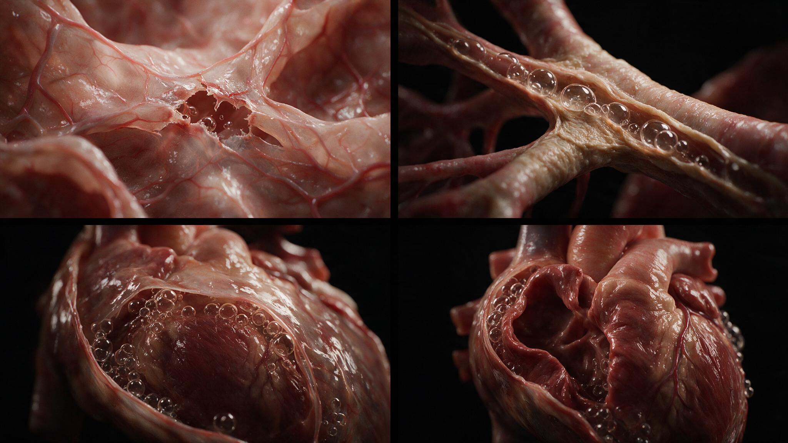
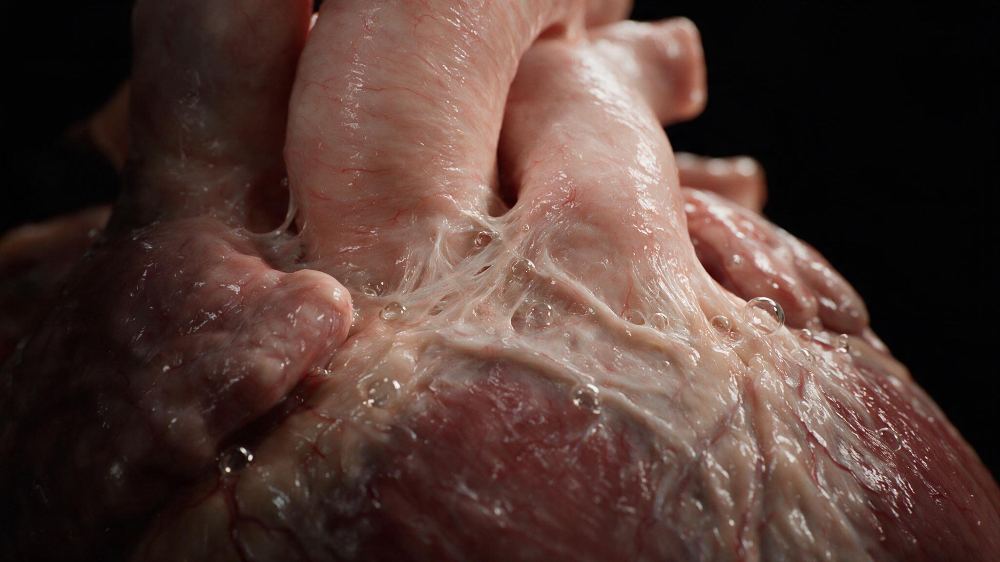
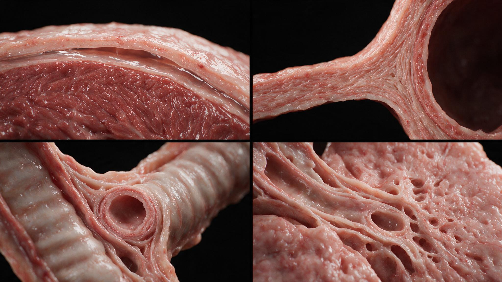

Air in the pericardial sac. The two words sit side by side in a radiology report like they belong together, but they describe something deeply unnatural: gas where there should be only the thin film of serous fluid that lets the heart glide against its fibrous casing. Pneumopericardium is rare in adults — more common in neonates on positive-pressure ventilation — but when it occurs, it signals a breach in the fascial boundaries that normally keep air out of the mediastinum's most protected compartment.
The pericardium is not an isolated bag. It is a continuation of the pretracheal fascia of the neck, and its fibrous layer blends with the adventitia of the great vessels at the root of the heart. This anatomic continuity means that air tracking down from a ruptured trachea, a torn bronchus, or even a perforated esophagus can dissect along fascial planes and enter the pericardial space. The Macklin effect describes one common mechanism: alveolar rupture from barotrauma forces air into the pulmonary interstitium, which then tracks along peribronchovascular sheaths toward the hilum and into the mediastinum. From the mediastinum, the air follows the pericardial reflections onto the great vessels and slips into the sac. The heart, which should beat against a thin film of lubricating fluid, now beats against a compressible gas bubble — and the chest X-ray shows a sharp, thin line of pericardium outlined by air on both sides, the heart suspended within a dark halo.


Pneumopericardium has a physical exam finding so distinctive it is named: the Hamman sign, or Hamman crunch. It is a precordial crackling sound synchronous with the heartbeat, heard best when the patient is sitting up and leaning forward. The crunch arises because the heart, with each contraction, displaces the air bubble trapped in the pericardial sac. The bubble compresses, moves, and re-expands, creating a sound that Auscultation captures as a series of crackles timed not to respiration but to the cardiac cycle. It is sometimes described as the sound of two leather surfaces rubbing together — bruit de moulin, or mill-wheel murmur, in the older literature. The sign is not pathognomonic (pneumomediastinum without pericardial involvement can produce a similar sound), but when present with a visible pericardial air stripe on imaging, it confirms the diagnosis.
The danger of pneumopericardium is not the air itself but the pressure it can generate. A small amount of air in the pericardial sac is well tolerated. But if air accumulates under pressure — if there is a one-way valve mechanism at the point of entry — the expanding gas bubble compresses the heart from outside. This is tension pneumopericardium, the pericardial analog of tension pneumothorax. The compressed heart cannot fill during diastole. Cardiac output falls. The patient develops pulsus paradoxus, distended neck veins, and hypotension indistinguishable from cardiac tamponade. The treatment is the same principle as tension pneumothorax: immediate decompression. A needle inserted at the subxiphoid angle, aimed toward the left shoulder, can evacuate the air and restore cardiac filling. Unlike tamponade from fluid, air is compressible and easily aspirated. The needle converts a life-threatening tension physiology to a stable pneumopericardium in seconds.

Pneumopericardium is an anatomic diagnosis dressed as a radiologic one. The air follows fascial planes that the dissector can trace with a fingertip — from the pretracheal fascia in the neck, down through the superior mediastinum, along the adventitia of the aorta and pulmonary artery, and finally into the pericardial sac at the root of the heart. Understanding this continuity is what separates the clinician who sees "air around the heart" and panics from the one who traces the likely source, checks for the Hamman sign, looks for tension physiology, and decides whether this is an observation problem or a needle problem. The illustrations in this series map that fascial continuity in three dimensions, showing the pathway air takes from a ruptured alveolus to the pericardial space, and the anatomy that makes the Hamman crunch possible.
You're set. We'll send the full write-up to your inbox shortly.